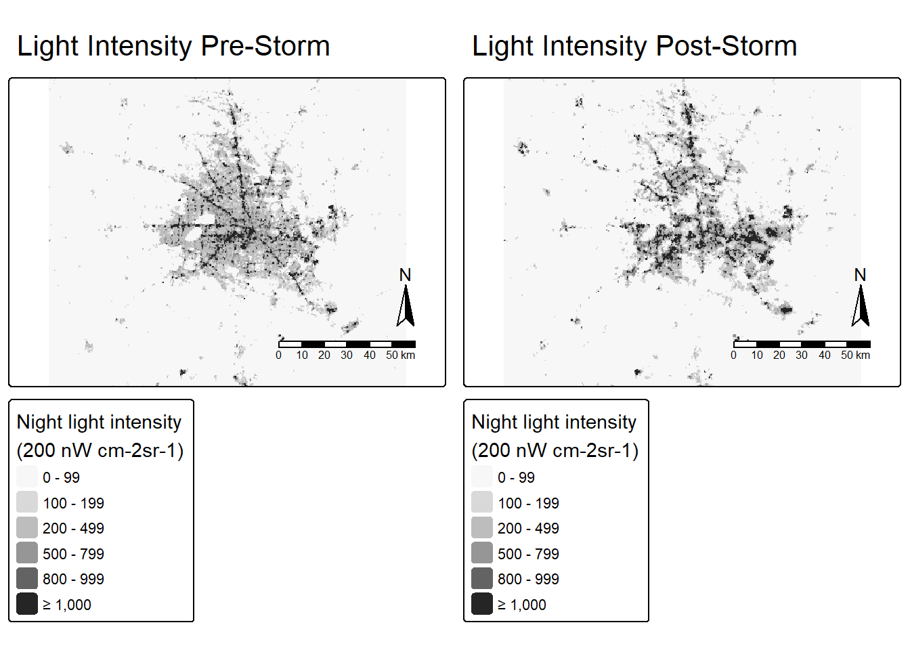
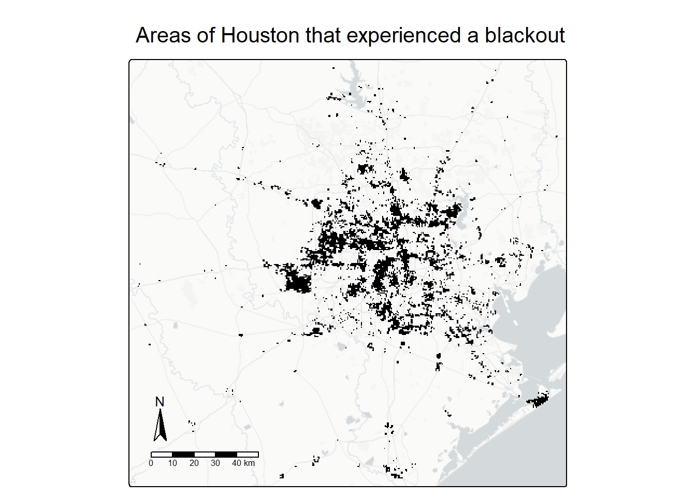
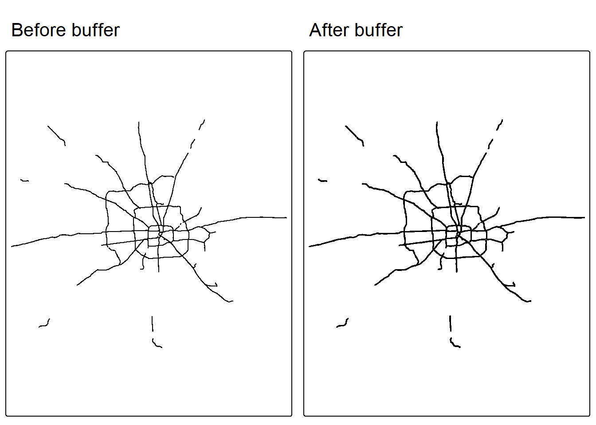
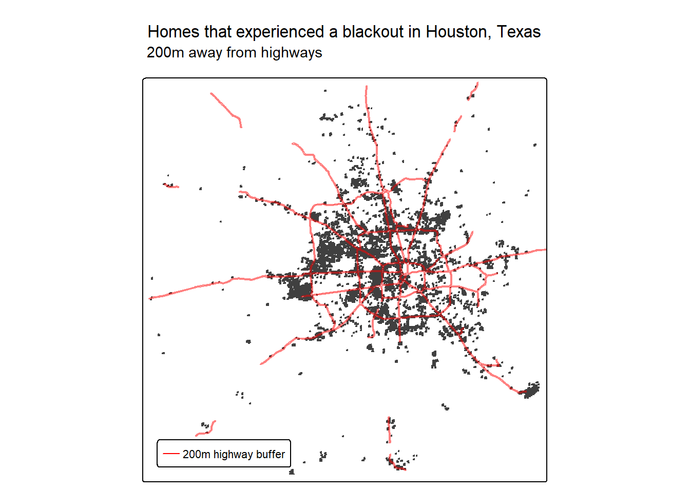
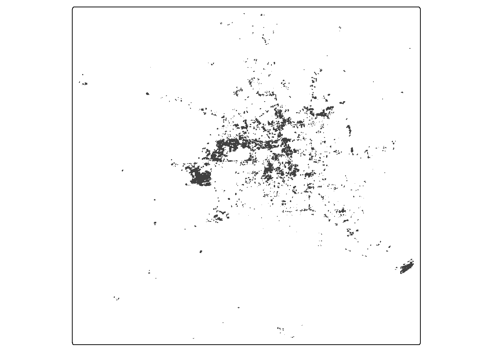
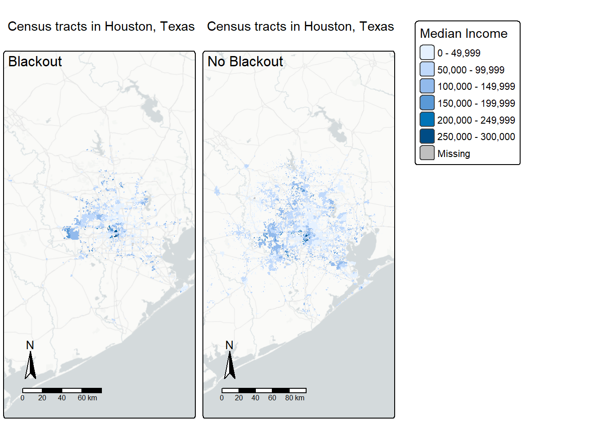
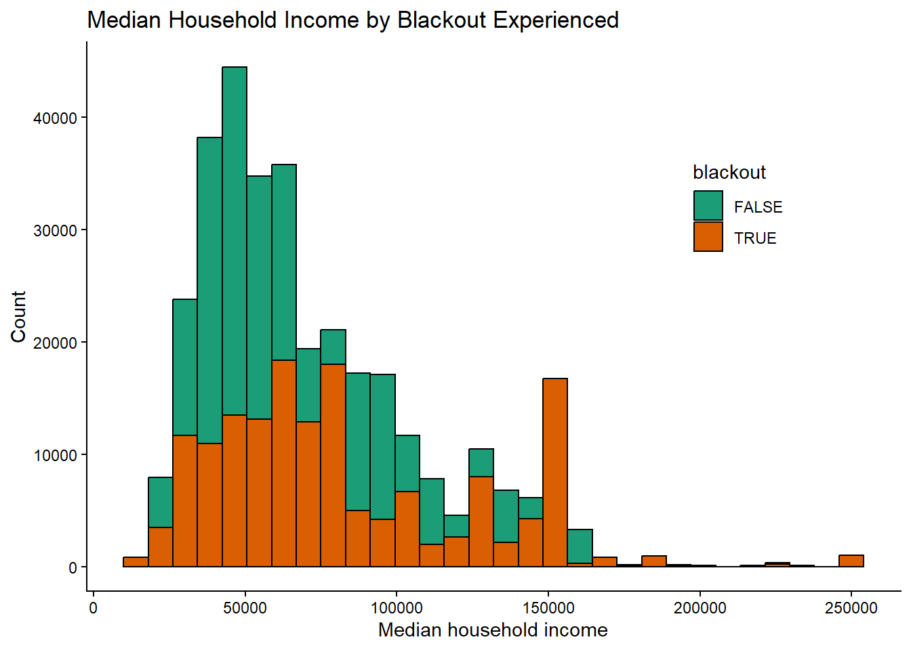
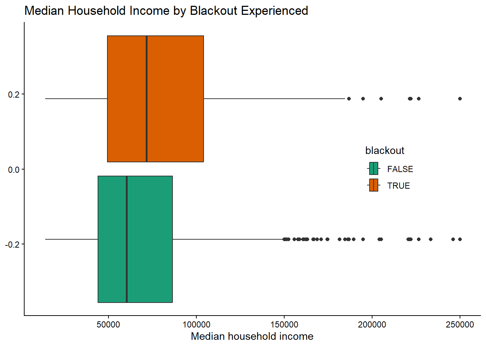

# load packages
library(tidyverse)
library(dplyr)
library(here)
library(sf)
library(stars)
library(terra)
library(raster)
library(tmap)Quantifying the Texas blackout of 2021
In early 2021, Texas experienced three extreme weather events resulting in a major power grid blackout. This blackout caused inhospitable conditions for many homes in Texas, with shortages of food, water, and heat. In this project, we will quantify the amount of homes in Houston that were affected by the outage, and investigate whether these impacts disproportionately affected certain census groups such as income.
# read in data
query_road <- "SELECT * FROM gis_osm_roads_free_1 WHERE fclass='motorway'"
roads <- st_read(here("data", "gis_osm_roads_free_1.gpkg"), query = query_road)
query_houses <- "SELECT * FROM gis_osm_buildings_a_free_1 WHERE
(type IS NULL AND name IS NULL) OR type in ('residential',
'apartments', 'house', 'static_caravan', 'detached')"
houses <- st_read(here("data", "gis_osm_buildings_a_free_1.gpkg"), query = query_houses)
st_layers(here("data", "ACS_2019_5YR_TRACT_48_TEXAS.gdb"))
socioeconomic_geoid <- st_read(here("data", "ACS_2019_5YR_TRACT_48_TEXAS.gdb"),
layer = "ACS_2019_5YR_TRACT_48_TEXAS")
socioeconomic <- st_read(here("data", "ACS_2019_5YR_TRACT_48_TEXAS.gdb"),
layer = "X19_INCOME")
light5_207 <- read_stars(here("data", "VNP46A1",
"VNP46A1.A2021038.h08v05.001.2021039064328.tif"))
light6_207<- read_stars(here("data", "VNP46A1",
"VNP46A1.A2021038.h08v06.001.2021039064329.tif"))
light5_216 <- read_stars(here("data", "VNP46A1",
"VNP46A1.A2021047.h08v05.001.2021048091106.tif"))
light6_216 <- read_stars(here("data", "VNP46A1",
"VNP46A1.A2021047.h08v06.001.2021048091105.tif"))Step 1: Find locations that experienced a blackout by creating a mask
Join the light data and find the change between dates
# join shapefiles of each tile for each day
light_207 <- st_mosaic(light5_207, light6_207)
light_216 <- st_mosaic(light5_216, light6_216)
# find the change in light intensity before and after the storm
light_change <- light_207 - light_216Visualize light intensity in Houston before and after the storm
# define bbox of Houston area
bbox_light <- st_bbox(c(xmin = -96.5, ymin = 29, xmax = -94.5, ymax = 30.5),
crs = st_crs(light_207))
# transform bbox into sf object
bbox_light <- st_as_sfc(bbox_light)
# double check crs match before cropping
st_crs(bbox_light) == st_crs(light_207)[1] TRUE# crop light intensities for each day to just Houston area
cropped_light_207 <- st_crop(light_207, bbox_light)
cropped_light_216 <- st_crop(light_216, bbox_light)# map each day to see the light change
map_207 <- tm_shape(cropped_light_207) +
tm_raster(palette = "Greys",
breaks = c(0, 100, 200, 500, 800, 1000, Inf),
title = "Night light intensity
(200 nW cm-2sr-1)") +
tm_title("Light Intensity Pre-Storm") +
tm_compass() +
tm_scalebar()
#
map_216 <- tm_shape(cropped_light_216) +
tm_raster(palette = "Greys",
breaks = c(0, 100, 200, 500, 800, 1000, Inf),
title = "Night light intensity
(200 nW cm-2sr-1)") +
tm_title("Light Intensity Post-Storm") +
tm_compass() +
tm_scalebar()
tmap_arrange(map_207, map_216, nrow = 1)
Create mask to define which areas experienced a blackout
# transform from stars to raster object
light_change <- rast(light_change)
# define matrix for values greater than 200 nw
rcl <- matrix(c(-Inf, 200, NA,
200, Inf, TRUE),
ncol = 3, byrow = TRUE)
# apply mask for values > 200 nW
reclass_light <- classify(light_change, rcl = rcl)
reclass_lightTransform light difference to a vector
# check crs of masked light dataframe
st_crs(reclass_light)$epsg[1] 4326# transform from rast to sf object to vectorize
light_change_vector <- reclass_light %>%
st_as_stars() %>%
st_as_sf() %>%
st_make_valid()
# check type of vectorized data frame
class(light_change_vector)[1] "sf" "data.frame"Crop (spatially subset) the blackout mask to the Houston area
# redefine bbox for Houston area
bbox_crop <- st_bbox(c(xmin = -96.5, ymin = 29, xmax = -94.5, ymax = 30.5),
crs = st_crs(light_change_vector))
# transform bbox to sf object
bbox_crop <- st_as_sfc(bbox_crop)
# double check class
class(bbox_crop)[1] "sfc_POLYGON" "sfc" # double check crs match
st_crs(bbox_crop) == st_crs(light_change_vector)[1] TRUE# crop vectorized light object to just Houston area
cropped_light_diff <- st_crop(light_change_vector, bbox_crop)Reproject the CRS of the light change data
# reproject vectorized data to NAD83 crs
cropped_light_diff <- st_transform(cropped_light_diff, crs = "epsg:3083")
st_crs(cropped_light_diff)$epsg[1] 3083Plot the areas of Houston that experienced a blackout
# plot Houston that experienced a blackout
tm_shape(cropped_light_diff) +
tm_fill(fill = "black") +
tm_basemap("CartoDB.PositronNoLabels") +
tm_title("Areas of Houston that experienced a blackout") +
tm_compass(position = tm_pos_in("left", "bottom")) +
tm_scalebar(position = tm_pos_in("left", "bottom"))
Step 2: Exclude highways from analysis
Find areas around highways to exclude from the analysis
# check units of roads and transform
st_crs(roads, parameters = TRUE)$units_gdal # its in degree units[1] "degree"roads <- st_transform(roads, st_crs(cropped_light_diff))
st_crs(roads, parameters = TRUE)$units_gdal # now it is in metre[1] "metre"# create buffer of 200 m around roadways
roads_200 <- st_buffer(roads, dist = 200)
# join with roads to treat as one road 200m large
roads_200 <- st_union(roads_200)
# plot quickly to check it worked
map_road <- tm_shape(roads) +
tm_lines() +
tm_title("Before buffer")
map_road_200 <- tm_shape(roads_200) +
tm_lines() +
tm_title("After buffer")
tmap_arrange(map_road, map_road_200, nrow = 1)
Find areas that experienced blackouts that are further than 200m from a highway
# check CRS match
st_crs(roads_200)$epsg == st_crs(cropped_light_diff)$epsg[1] TRUE# find areas of Houston that experienced blackout that are not near roads
light_road_clip <- st_difference(cropped_light_diff, roads_200)
# plot to see where they overlapped
tm_shape(light_road_clip) +
tm_polygons() +
tm_shape(roads_200) +
tm_lines(col_alpha = 0.5,
col = "red") +
tm_title("Homes that experienced a blackout in Houston, Texas") +
tm_title("200m away from highways", size = 0.9) +
tm_add_legend(type = "lines",
labels = c("200m highway buffer"),
col = c("red")) +
tm_layout(legend.position = c("left", "bottom"))
Step 3: Identify homes that experienced blackouts by combining the locations of homes and blackouts
Find homes that experienced a blackout
# check crs match
st_crs(light_road_clip) == st_crs(houses) [1] FALSE# transform crs to match
houses <- st_transform(houses, st_crs(light_road_clip))
# check crs match
st_crs(light_road_clip) == st_crs(houses) [1] TRUE# find homes that experienced a blackout
homes_blackout <- st_intersection(light_road_clip, houses)Visualize homes that experienced a blackout
# plot homes in Houston that experienced a blackout
tm_shape(homes_blackout) +
tm_polygons() +
tm_basemap("CartoDB.PositronNoLabels") +
tm_title("Homes that experienced a blackout in Houston, Texas") +
tm_compass(position = tm_pos_in("left", "bottom")) +
tm_scalebar(position = tm_pos_in("left", "bottom"))
Find the number of homes that experienced a blackout
# find number of homes that experienced a blackout
n_homes <- nrow(homes_blackout)We can estimate that the number of homes that experienced a blackout was 168874.
Step 4: Identify the census tracts likely impacted by blackout
Prepare socioeconomic data for joining
# check crs of socioeconomic data
st_crs(socioeconomic_geoid)$epsg[1] 4269# transform to match NAD83
socioeconomic_geoid <- st_transform(socioeconomic_geoid,
crs = st_crs(homes_blackout))
# rename GEOID column to prep for joining
socioeconomic <- socioeconomic %>%
rename("GEOID_Data" = "GEOID")Join the spatial data with the socioeconomic data
# join shapefile with socioeconomic data
socioeconomic_join <- left_join(socioeconomic_geoid, socioeconomic,
by = "GEOID_Data")
# transform to sf object
socioeconomic_join <- st_as_sf(socioeconomic_join)
# check the column we want was populated with data
socioeconomic_join$B19013e1
# select for only the columns we want
socioeconomic_join <- socioeconomic_join[, c("TRACTCE", "GEOID_Data", "B19013e1")]Find homes that did and did not experience a blackout
homes_blackout_TF <- houses %>%
mutate(blackout = osm_id %in% homes_blackout$osm_id)
# join socioeconomic data to homes that experienced a blackout
socioeconomic_homes <- st_intersection(homes_blackout_TF, socioeconomic_join)Map of the census tracts in Houston that lost power
# filter census tracts that did and did not experience blackouts into different data frames
socioeconomic_homes_blackout <- socioeconomic_homes %>%
filter(blackout == "TRUE")
socioeconomic_homes_no_blackout <- socioeconomic_homes %>%
filter(blackout == "FALSE")
# map each separately
map_blackout <- tm_shape(socioeconomic_homes_blackout) +
tm_polygons(col = "B19013e1") +
tm_basemap("CartoDB.PositronNoLabels") +
tm_title("Census tracts in Houston, Texas") +
tm_credits("Blackout",
size = 1,
position = c("LEFT", "TOP")) +
tm_layout(legend.show = FALSE,
asp = 1) +
tm_compass(position = tm_pos_in("left", "bottom")) +
tm_scalebar(position = tm_pos_in("left", "bottom"))
map_no_blackout <- tm_shape(socioeconomic_homes_no_blackout) +
tm_polygons(col = "B19013e1") +
tm_basemap("CartoDB.PositronNoLabels") +
tm_title("Census tracts in Houston, Texas") +
tm_credits("No Blackout",
size = 1,
position = c("LEFT", "TOP")) +
tm_layout(legend.show = FALSE,
asp = 1) +
tm_compass(position = tm_pos_in("left", "bottom")) +
tm_scalebar(position = tm_pos_in("left", "bottom"))
map_blackout_legend <- tm_shape(socioeconomic_homes_blackout) +
tm_fill(col = "B19013e1",
title = "Median Income") +
tm_layout(legend.only = TRUE)
tmap_arrange(map_blackout, map_no_blackout, map_blackout_legend, nrow = 1)
Compare the distributions of median household income for census tracts that did and did not experience blackouts
# plot median household income by blackout or no blackout
ggplot(socioeconomic_homes, aes(x = B19013e1, fill = blackout)) +
geom_histogram(col = "black", position = "identity") +
labs(title = "Median Household Income by Blackout Experienced",
x = "Median household income",
y = "Count") +
scale_color_brewer(palette="Dark2")+
scale_fill_brewer(palette="Dark2") +
theme_classic() +
theme(legend.position = "inside",
legend.position.inside = c(0.8, 0.7))
ggplot(socioeconomic_homes, aes(x = B19013e1, fill = blackout)) +
geom_boxplot() +
scale_fill_brewer(palette="Dark2") +
labs(title = "Median Household Income by Blackout Experienced",
x = "Median household income") +
theme_classic() +
theme(legend.position = "inside",
legend.position.inside = c(0.8, 0.5))
Step 5: Conclusions
We found around 160,000 homes in Houston were affected by the storms in 2021, experiencing a blackout during extreme weather events. The median household income for those affected was around 70,000, while those unaffected and did not experience a blackout was around 60,000. This analysis is a good start estimating what census groups might’ve been affected by the storms, but getting higher resolution for socioeconomic data (e.g each home instead of census tracts) would yield a stronger analysis. Additionally, clear spatial data of light intensity was limited due to cloud cover and the nature of the storm, so better spatial resolution of data could yield a more accurate and detailed understanding of which areas experienced a blackout.